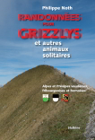

Wanderungen für Einsiedler
In den Alpen ist Einsamkeit kein Mangel — sie ist das Ziel. Routen, ausgewählt nach ihrer Stille, nicht nach ihrer Beliebtheit.


Die Philosophie
Das Konzept der Wanderungen für Bären und andere Einzelgänger ist einfach: Manche Wanderer suchen Gesellschaft, andere suchen, ihr zu entkommen. Diese Reihe richtet sich an die Letzteren.
Jede Route wird nicht nur nach Landschaft oder technischem Interesse ausgewählt, sondern nach der nahezu garantierten Aussicht, alleine zu wandern. Die Erfahrung von Stille in den Bergen — keine Stimmen, keine klappernden Stöcke, niemand der fragt, wie weit es noch zum Gipfel ist — gilt als integraler Bestandteil der Route.
Wie Nicolas Bouvier schrieb, ist Langsamkeit ein höchster Luxus. Diese Führer sind um diesen Gedanken herum aufgebaut: lange Tage, späte Rückkehr, Mahlzeiten ohne Eile.
Die Bücher
Zwei Bände veröffentlicht bei den Éditions Slatkine, Genf. Jeder präsentiert 25 Routen, bewertet nach einem Bären-Index — einem Maß der erwarteten Ruhe auf dem Weg, von gelegentlichen Wanderern bis zu echter Einsamkeit.

25 Routen in den Walliser Alpen und im Aostatal, ausgewählt für ihre Einsamkeit. Jede Wanderung umfasst Ausgangspunkt, Schwierigkeitsgrad, Dauer, Höhenprofil und Kartenausschnitte. Der Bären-Index bewertet die erwartete Ruhe auf jedem Pfad — von ruhig bis wirklich verlassen.
Auf slatkine.com ansehen →
Ein zweiter Band, der die Waadtländer, Freiburger und Berner Alpen und Voralpen abdeckt. Weitere 25 Routen mit Bären-Index, Strategien zur Maximierung der Chancen auf Bergstille und praktische Tipps zur Planung von Solowanderungen.
Auf slatkine.com ansehen →